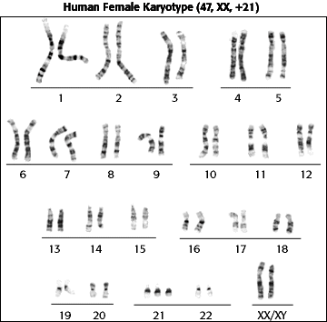

Human Genetics Problem Set
Problem 6 Tutorial: Diagnosis of aneuploidy
| Diagnosis of chromosome aneuploidy of unborn children is normally done by a combination of amniocentesis, cell culture, and karyotyping. |
| Chromosomal aneuploid is a genetic condition in which an individual has either an abnormal number of one or more chromosomes, or has pieces of chromosomes lacking or in excess. |
|
The number, types, and appearance of chromosomes is determined by karyotyping, a pictorial display of chromosomes photographed through the microscope.
Analysis of chromosomes of an unborn child can be carried out with cells withdrawn by needle from the amniotic fluid within the mother's uterus. Cells can be cultured and used for biochemical and genetic analysis. The mitotic chromosomes of the fetal cell are analyzed to determine the sex of the unborn child and to test for aneuploidy. |



University of Arizona
Revised: November 5, 1998
Contact the Development Team
http://biology.arizona.edu
All contents copyright © 1996-98. All rights reserved.